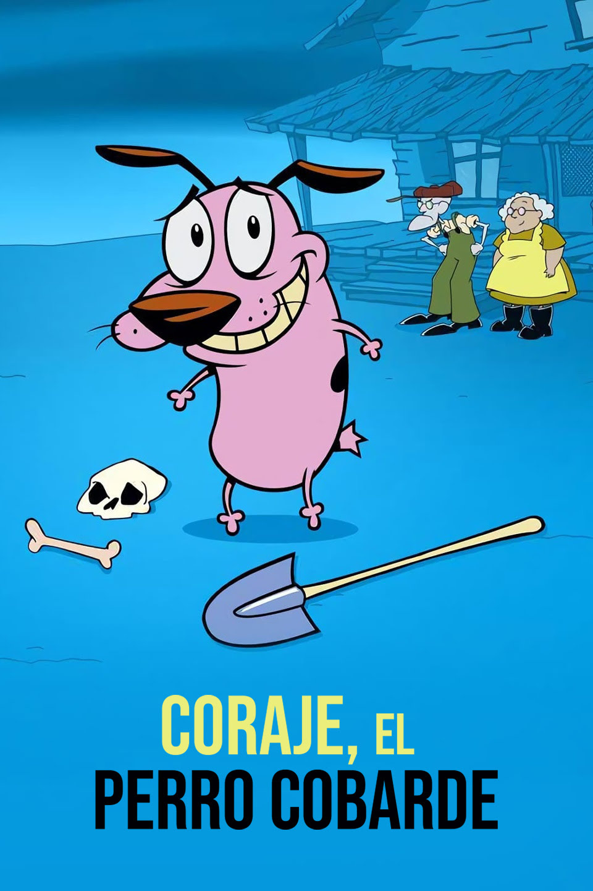
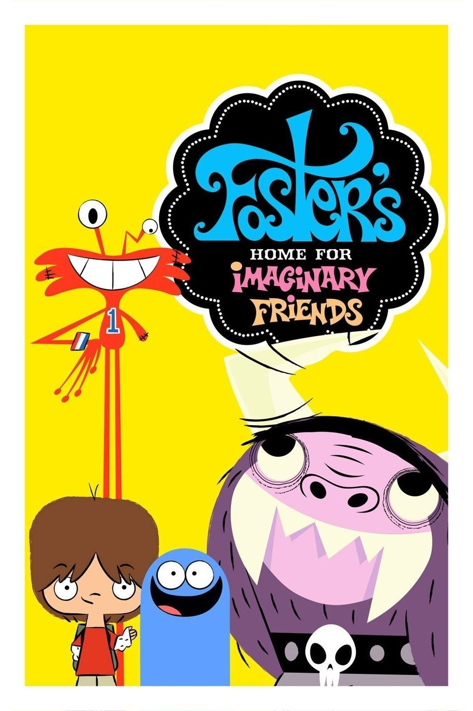
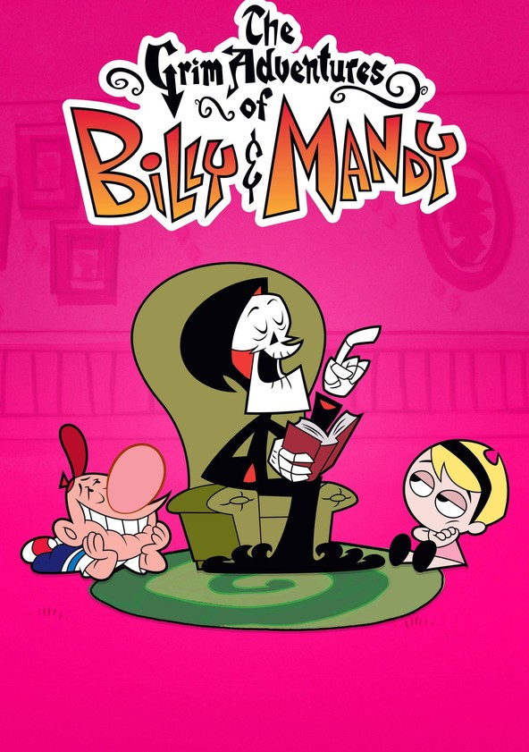

"Un Show Más" sigue las hilarantes aventuras de Mordecai, un arrendajo azul, y Rigby,
un mapache,
quienes trabajan como encargados de mantenimiento en un parque. A pesar de su trabajo, se encuentran
constantemente envueltos en situaciones surrealistas y cómicas que desafían la realidad, mientras
enfrentan desafíos en el trabajo y en sus relaciones personales. La serie mezcla humor absurdo con
momentos de reflexión sobre la amistad y la vida adulta.
"Un Show Más" sigue las hilarantes aventuras de Mordecai, un arrendajo azul, y Rigby,
un mapache,
quienes trabajan como encargados de mantenimiento en un parque. A pesar de su trabajo, se encuentran
constantemente envueltos en situaciones surrealistas y cómicas que desafían la realidad, mientras
enfrentan desafíos en el trabajo y en sus relaciones personales. La serie mezcla humor absurdo con
momentos de reflexión sobre la amistad y la vida adulta. "Hora de Aventura" sigue las emocionantes aventuras de Finn, un joven aventurero
humano, y su fiel
amigo Jake, un perro mágico, mientras exploran el colorido y surrealista mundo de Ooo. En su viaje,
enfrentan diversos desafíos, hacen nuevos amigos y protegen el reino de Ooo de villanos poderosos.
La serie combina humor, acción y elementos de fantasía para crear historias memorables que abordan
temas profundos como la amistad, el crecimiento personal y la responsabilidad.
"Hora de Aventura" sigue las emocionantes aventuras de Finn, un joven aventurero
humano, y su fiel
amigo Jake, un perro mágico, mientras exploran el colorido y surrealista mundo de Ooo. En su viaje,
enfrentan diversos desafíos, hacen nuevos amigos y protegen el reino de Ooo de villanos poderosos.
La serie combina humor, acción y elementos de fantasía para crear historias memorables que abordan
temas profundos como la amistad, el crecimiento personal y la responsabilidad. "Coraje el Perro Cobarde" sigue las aventuras de Coraje, un perro tímido pero valiente, y sus dueños, Muriel y Eustace, quienes viven en una granja en medio de la nada. Coraje se enfrenta a monstruos y peligros para proteger a su familia, demostrando su coraje una y otra vez. La serie combina elementos de comedia, terror y aventura para crear una experiencia única y emocionante para el espectador.
 "Las Aventuras de Flapjack" sigue las locas aventuras de Flapjack, un niño aventurero,
y su amigo
Capitán Falange, un marinero rudo pero de buen corazón. Juntos navegan por mares peligrosos y
encuentran extraños personajes en busca de la isla mítica de Candied Island. La serie presenta un
estilo de animación único y un humor absurdo que la convierten en una experiencia divertida y
entretenida para todos los espectadores.
"Las Aventuras de Flapjack" sigue las locas aventuras de Flapjack, un niño aventurero,
y su amigo
Capitán Falange, un marinero rudo pero de buen corazón. Juntos navegan por mares peligrosos y
encuentran extraños personajes en busca de la isla mítica de Candied Island. La serie presenta un
estilo de animación único y un humor absurdo que la convierten en una experiencia divertida y
entretenida para todos los espectadores. "Mansión Foster para amigos imaginarios" sigue las aventuras de Mac, un niño de ocho años, y su amigo Bloo, un amigo imaginario que vive en la Mansión Foster, un hogar para amigos imaginarios no deseados. Juntos, se enfrentan a problemas y hacen nuevos amigos en la colorida mansión. La serie combina humor, fantasía y emociones para crear historias conmovedoras y entretenidas que encantarán a toda la familia.
 "Las Sombrias Aventuras de Billy y Mandy" sigue las aventuras de Billy, un niño despreocupado, y Mandy, una niña sarcástica y siniestra, quienes hacen un trato con la Muerte para evitar que los lleve al más allá. Juntos, se embarcan en aventuras locas y encuentran extraños personajes en su ciudad suburbana. La serie combina humor negro con situaciones absurdas para crear una experiencia única y entretenida para el espectador.
"Teen Titans" sigue las aventuras de un grupo de jóvenes superhéroes, incluidos Robin, Starfire, Cyborg, Raven y Beast Boy, quienes forman los "Teen Titans" para luchar contra el crimen y proteger Jump City. La serie combina acción, comedia y drama mientras los Titans enfrentan a villanos y lidian con sus propios conflictos personales. La serie ofrece una mezcla emocionante de aventuras superheroicas y relaciones interpersonales que la hacen atractiva para un amplio público.
"El Maravilloso Mundo de Gumball" sigue las aventuras de Gumball Watterson, un gato azul, y su hermano adoptivo Darwin, un pez dorado, mientras navegan por la vida en la ciudad de Elmore. La serie combina animación tradicional, animación por computadora y elementos de acción en vivo para contar las historias absurdas y a menudo surrealistas de Gumball y su familia. Con su humor ingenioso y sus personajes coloridos, la serie ofrece una experiencia de visualización única y divertida para todas las edades.
 "Samurai Jack" sigue las aventuras de un guerrero samurái en un futuro distópico que
lucha contra
el malvado Aku, quien ha conquistado el mundo y enviado a Jack al futuro. La serie combina elementos
de acción, aventura y filosofía mientras Jack busca una manera de regresar al pasado y derrotar a
Aku. Con su arte visual impresionante y narrativa épica, "Samurai Jack" ofrece una experiencia única
y emocionante para los espectadores de todas las edades.
"Samurai Jack" sigue las aventuras de un guerrero samurái en un futuro distópico que
lucha contra
el malvado Aku, quien ha conquistado el mundo y enviado a Jack al futuro. La serie combina elementos
de acción, aventura y filosofía mientras Jack busca una manera de regresar al pasado y derrotar a
Aku. Con su arte visual impresionante y narrativa épica, "Samurai Jack" ofrece una experiencia única
y emocionante para los espectadores de todas las edades. "Las Chicas Superpoderosas" sigue las aventuras de tres niñas superpoderosas, Burbuja,
Bombón y
Bellota, creadas por el Profesor Utonio para proteger la ciudad de Saltadilla de villanos y
monstruos. La serie combina acción, comedia y mensajes positivos mientras las chicas luchan contra
el crimen y defienden la justicia. Con su estilo de animación vibrante y humor ingenioso, "Las
Chicas Superpoderosas" se ha convertido en un clásico de la animación que sigue siendo querido por
fans de todas las edades.
"Las Chicas Superpoderosas" sigue las aventuras de tres niñas superpoderosas, Burbuja,
Bombón y
Bellota, creadas por el Profesor Utonio para proteger la ciudad de Saltadilla de villanos y
monstruos. La serie combina acción, comedia y mensajes positivos mientras las chicas luchan contra
el crimen y defienden la justicia. Con su estilo de animación vibrante y humor ingenioso, "Las
Chicas Superpoderosas" se ha convertido en un clásico de la animación que sigue siendo querido por
fans de todas las edades.